Este trabalho utiliza um conjunto de dados de vagas para o mercado de Inteligência Artificial e Machine Learning, obtido via Kaggle (AI Job Market Trends). Cada linha representa uma vaga identificada por job_id, com informações de cargo, empresa, localização, nível de experiência, tipo de vínculo, setor, habilidades e ferramentas, além de uma faixa salarial anual em dólares.
Como o salário é assimétrico, o alvo do supervisionado é salary_log = log(salary_mid).
Usaremos clusters e tópicos nos métodos não supervisionados salary_log = log(salary_mid).
Tamanho do dataset: 2000 vagas e 17 colunas. Base modelável (após salary_valid e remoção de salários ausentes): 1960 vagas.
Modelo com melhor RMSE em teste: xgboost (RMSE ≈ 0.283, MAE ≈ 0.237, em salary_log).
Na comparação das representações textuais (mantendo Random Forest fixa), a menor RMSE em teste foi obtida com tfidf_lsa.
| linhas | colunas |
|---|---|
| 2000 | 17 |
| estatistica | valor |
|---|---|
| Min. | 47578.50 |
| 1st Qu. | 94466.25 |
| Median | 123202.75 |
| Mean | 123040.00 |
| 3rd Qu. | 151413.00 |
| Max. | 197776.50 |
| estatistica | valor |
|---|---|
| Min. | 2023-09-21 |
| 1st Qu. | 2024-03-20 |
| Median | 2024-09-26 |
| Mean | 2024-09-21 |
| 3rd Qu. | 2025-03-16 |
| Max. | 2025-09-19 |
| experience_level | n |
|---|---|
| Entry | 702 |
| Mid | 668 |
| Senior | 630 |
| employment_type | n |
|---|---|
| Internship | 574 |
| Full-time | 509 |
| Contract | 465 |
| Remote | 452 |
| industry | n |
|---|---|
| Automotive | 300 |
| Education | 294 |
| Retail | 293 |
| E-commerce | 291 |
| Finance | 279 |
| Tech | 274 |
| Healthcare | 269 |
Na limpeza inicial, garantimos job_id como identificador, parseamos a faixa salarial em salary_min/salary_max, definimos salary_mid como alvo numérico e padronizamos datas e campos textuais.
Figura 1 – Distribuição de salary_mid
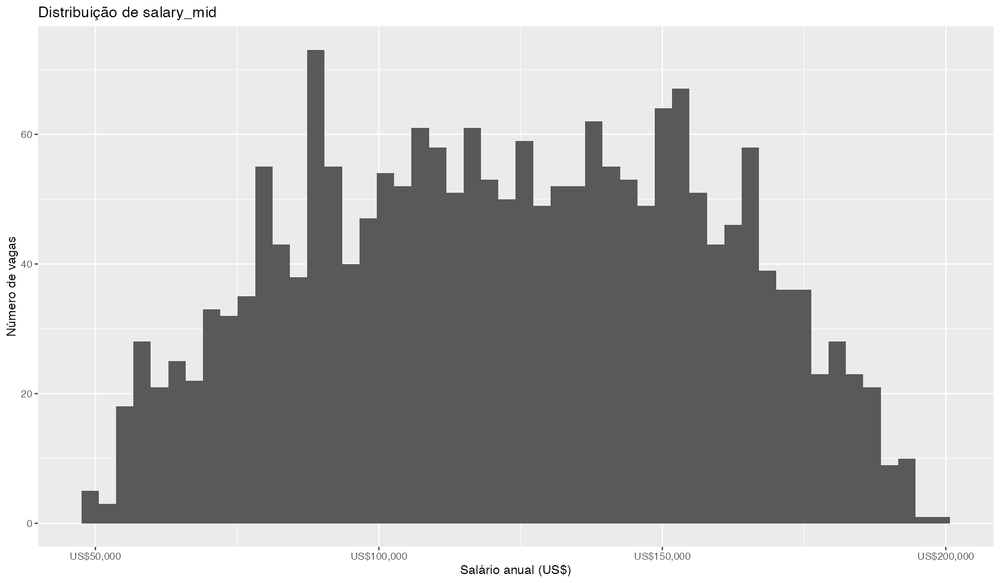
Figura 2 – Distribuição de log(salary_mid)
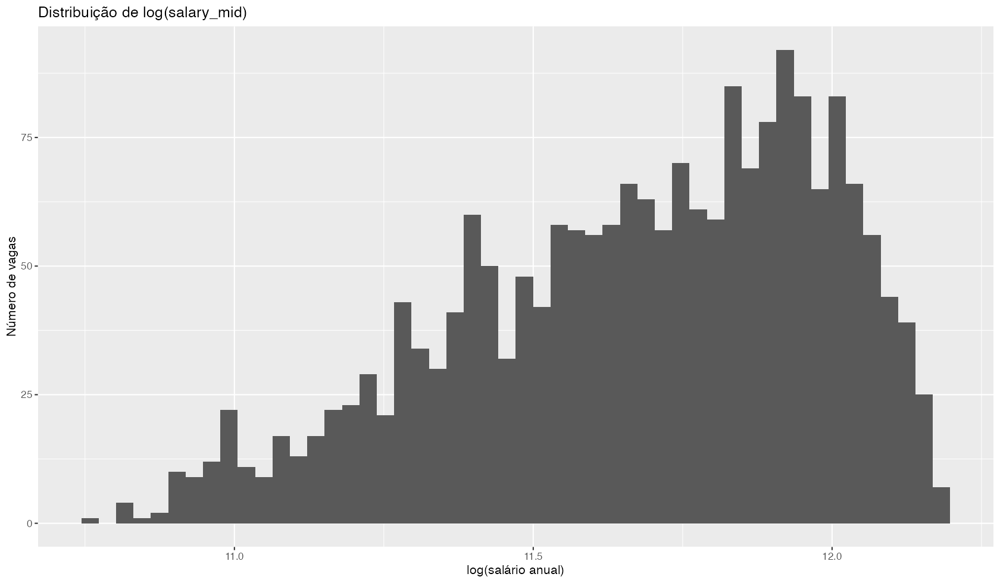
Entre as vagas com salary_mid informado, a mediana é US$123,203, o 3º quartil é US$151,413 e o máximo alcança US$197,776. Essa distância entre mediana e máximo indica uma distribuição assimétrica à direita. A transformação logarítmica (Figura 2) produz uma distribuição mais regular, justificando o uso de salary_log = log(salary_mid) como alvo da regressão.
Figura 3 – Salário por nível de experiência
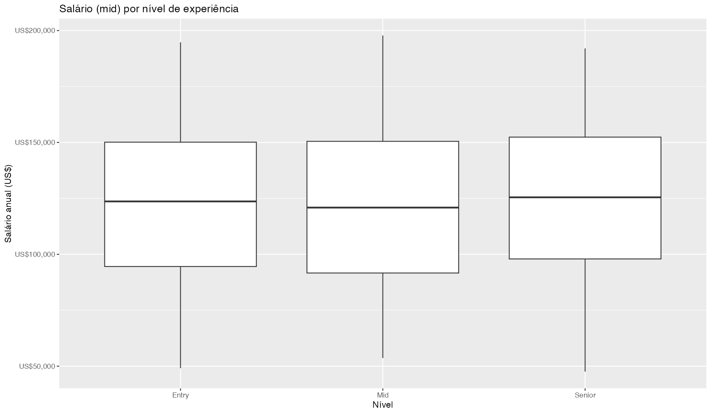
Figura 4 – Salário por país (top 10)
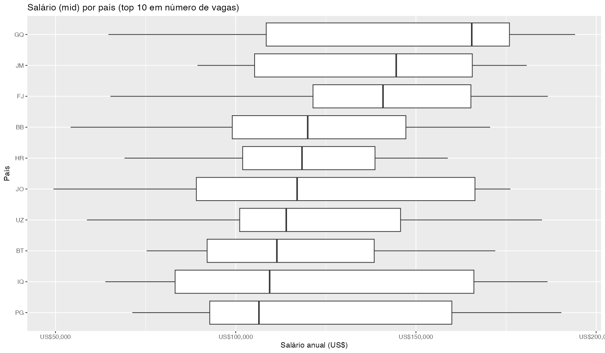
| experience_level | n | med |
|---|---|---|
| Senior | 630 | 125470 |
| Entry | 702 | 123638 |
| Mid | 668 | 120882 |
| country | n | med |
|---|---|---|
| GQ | 16 | 165485 |
| JM | 16 | 144525 |
| FJ | 18 | 140864 |
| BB | 18 | 119972 |
| HR | 18 | 118389 |
| JO | 17 | 117034 |
| UZ | 16 | 114018 |
| BT | 18 | 111420 |
| IQ | 17 | 109410 |
| PG | 19 | 106442 |
Os boxplots das Figuras 3 e 4 mostram heterogeneidade salarial. Na base, os níveis com maior mediana salarial são Senior e Entry (medianas em torno de US$125,470 e US$123,638). Entre os 10 países com mais vagas, as maiores medianas aparecem em GQ e JM (medianas em torno de US$165,485 e US$144,525). Isso reforça a importância de experience_level e localização como preditores.
Após a etapa de preparação, não foram identificados valores faltantes residuais nas variáveis analisadas.
Em variáveis numéricas, os faltantes são imputados com mediana na receita (step_impute_median), pois a mediana é robusta a outliers. Nas colunas textuais usadas em text_blob (job_title, skills_required, tools_preferred e industry), NA é substituído por string vazia antes da concatenação, evitando problemas na tokenização.
Figura 6 – Skills mais frequentes
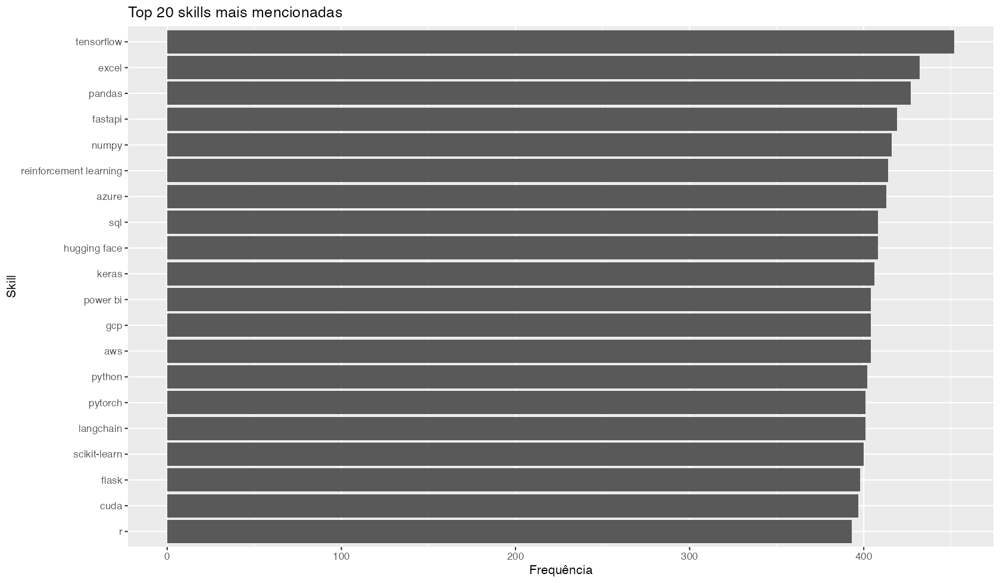
A Figura 6 mostra que as skills mais mencionadas incluem tensorflow, excel, pandas, fastapi, numpy. Essa concentração em um conjunto relativamente pequeno de tecnologias motiva o uso de representações textuais mais ricas (TF‑IDF, LSA e embeddings) na modelagem supervisionada.
A seguir, medimos relações entre variáveis e salário usando salary_log. Para variáveis numéricas, reportamos correlação de Pearson e Spearman. Para variáveis categóricas, usamos η² (proporção da variância de salary_log explicada por grupos; não implica causalidade). Para manter interpretabilidade, categorias raras em variáveis de alta cardinalidade são agrupadas em Outros. Variáveis diretamente derivadas do próprio salário não são incluídas nesta EDA para evitar correlações triviais.
| predictor | spearman | p_spearman | p_spearman_fdr | sig_spearman | pearson | p_pearson | n |
|---|---|---|---|---|---|---|---|
| text_chars | 0.0430 | 0.0570 | 0.3993 | 0.0409 | 0.0705 | 1960 | |
| n_tools | 0.0308 | 0.1734 | 0.5440 | 0.0320 | 0.1573 | 1960 | |
| title_n_words | -0.0250 | 0.2692 | 0.5440 | -0.0204 | 0.3659 | 1960 | |
| posted_month | 0.0229 | 0.3108 | 0.5440 | 0.0256 | 0.2578 | 1960 | |
| n_skills | 0.0150 | 0.5081 | 0.7114 | 0.0117 | 0.6041 | 1960 | |
| posted_date_num | 0.0085 | 0.7053 | 0.7792 | 0.0057 | 0.8015 | 1960 | |
| posted_year | -0.0063 | 0.7792 | 0.7792 | -0.0065 | 0.7746 | 1960 |
Gráfico – Top correlações numéricas com salary_log
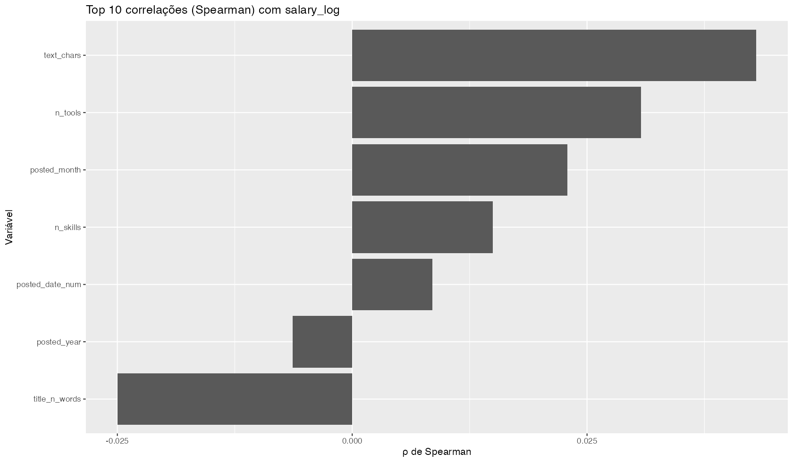
| variable | eta2 | n | n_levels |
|---|---|---|---|
| country_top | 0.0063 | 1960 | 13 |
| job_title_top | 0.0035 | 1960 | 8 |
| experience_level | 0.0022 | 1960 | 3 |
| employment_type | 0.0013 | 1960 | 4 |
| industry_top | 0.0009 | 1960 | 7 |
| company_size | 0.0004 | 1960 | 3 |
Gráfico – Associação categórica (η²) com salary_log
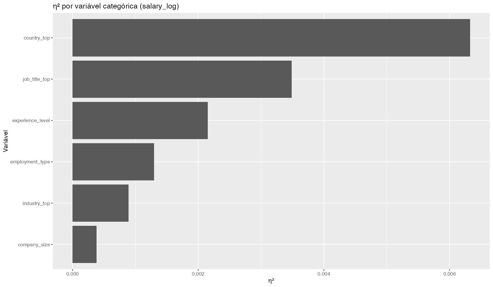
Tratando experience_level como ordinal (Entry < Mid < Senior < Lead/Principal < Executive), a correlação de Spearman com salary_log é ≈ 0.019 (p ≈ 3.93e-01).
Essas relações descritivas ajudam a interpretar o problema e a priorizar variáveis no modelo, mas não devem ser lidas como efeito causal (há confusão por setor, país, senioridade, empresa etc.).
A coluna original salary_range_usd traz faixas em texto (ex.: "100000-150000" ou "100,000 - 150,000 USD"). Implementamos uma função que limpa símbolos de moeda e vírgulas, identifica padrões min-max e valores únicos, corrige faixas invertidas e constrói salary_min, salary_max e salary_mid. O alvo da regressão é salary_log = log(salary_mid).
| rule_name | rmse | n | penalty | mixture |
|---|---|---|---|---|
| iqr_1.5 | 0.3062 | 2000 | 1 | 0.6833 |
| iqr_3 | 0.3062 | 2000 | 1 | 0.6833 |
| none | 0.3062 | 2000 | 1 | 0.6833 |
| quantile_0.5_99.5 | 0.2999 | 1980 | 1 | 0.6833 |
| quantile_1_99 | 0.2945 | 1960 | 1 | 0.6833 |
| rule_name | type | n_non_na | n_valid_full | n_removed_non_na | prop_removed | min_kept | max_kept |
|---|---|---|---|---|---|---|---|
| none | none | 2000 | 1 | 0 | 0 | 47578.5 | 197776.5 |
| quantile_1_99 | quantile | 2000 | 1 | 0 | 0 | 47578.5 | 197776.5 |
| quantile_0.5_99.5 | quantile | 2000 | 1 | 0 | 0 | 47578.5 | 197776.5 |
| iqr_1.5 | iqr | 2000 | 1 | 0 | 0 | 47578.5 | 197776.5 |
| iqr_3 | iqr | 2000 | 1 | 0 | 0 | 47578.5 | 197776.5 |
Figura 7 – Regras de trimming de salário
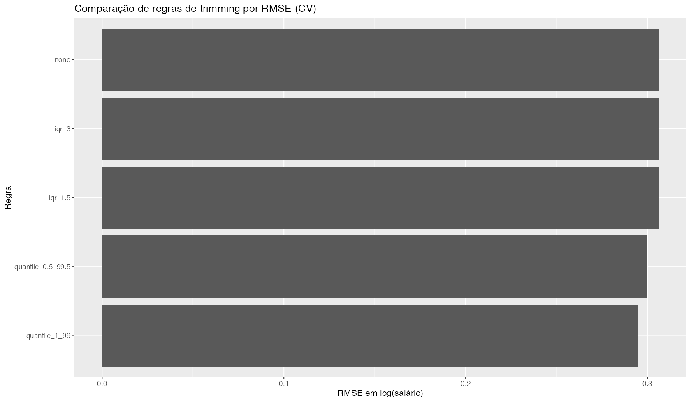
A melhor regra de trimming pelo menor RMSE em CV foi quantile_1_99, mantendo 1960 de 2000 vagas com salário informado (98.0%). Em relação ao dataset completo (incluindo salários ausentes), isso corresponde a 98.0%.
As regras baseadas em IQR (iqr_1.5, iqr_3) resultaram no mesmo conjunto de vagas que a regra none (após exclusão de salários ausentes), indicando ausência de outliers extremos segundo esse critério específico. Na prática, somente as regras por quantis efetivamente removem observações.
As colunas job_title, skills_required, tools_preferred e industry são concatenadas em text_blob. Isso permite aplicar um pipeline único de NLP e capturar tanto skills quanto contexto de setor e cargo.
Em todas as variantes, utilizamos as mesmas variáveis estruturadas (nível de experiência, tipo de vínculo, localização, indústria, etc.). O que muda é apenas a forma como o texto unificado text_blob é projetado em espaço vetorial: os componentes tfidf_lsa_* vêm de TF‑IDF seguido de SVD (LSA); os vetores emb_* são embeddings GloVe médios por vaga; e a representação hybrid concatena as duas.
Figura 8 – Variância explicada por componentes LSA
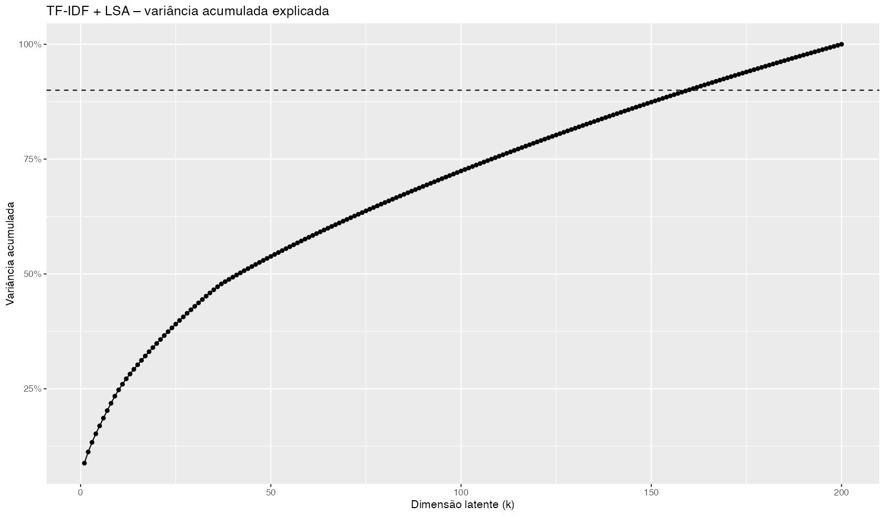
| .metric | .estimator | .estimate | model | features |
|---|---|---|---|---|
| mae | standard | 0.237215 | random_forest | tfidf_lsa |
| mae | standard | 0.237243 | random_forest | hybrid |
| mae | standard | 0.237268 | random_forest | embeddings |
| rmse | standard | 0.283496 | random_forest | tfidf_lsa |
| rmse | standard | 0.283539 | random_forest | hybrid |
| rmse | standard | 0.283544 | random_forest | embeddings |
Figura 9 – Diferença relativa de RMSE por representação textual
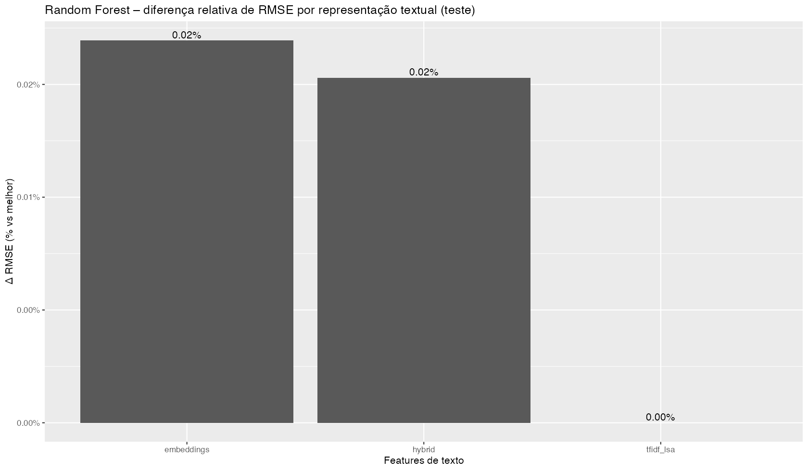
Gráfico – Diferença relativa de MAE por representação textual
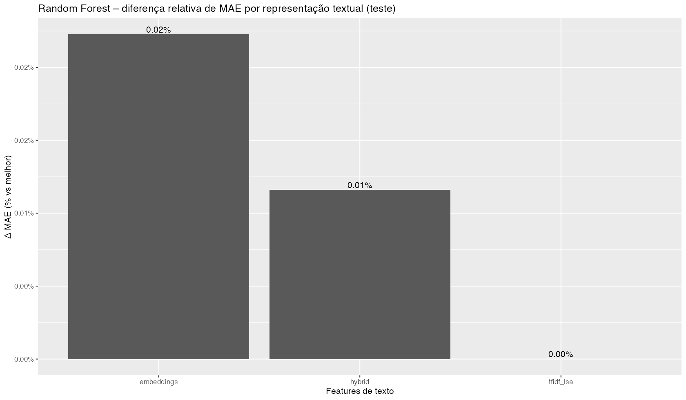
Mantendo a família Random Forest fixa, a representação com menor RMSE de teste foi tfidf_lsa (apenas TF‑IDF+LSA). Por isso, adotamos essa representação como padrão na comparação entre famílias de modelos.
As diferenças relativas de RMSE entre representações textuais ficam abaixo de 0.02%, indicando que a escolha fina da representação tem impacto marginal no desempenho, frente às variáveis estruturadas e ao ruído do alvo.
A função build_recipe() remove IDs e texto bruto, extrai ano/mês da data, imputa faltantes numéricos com mediana, cria dummies one‑hot para variáveis categóricas, marca níveis novos em dados futuros (step_novel), remove preditores de variância quase zero e normaliza preditores numéricos, garantindo entrada consistente para Elastic Net, Random Forest e XGBoost.
O alvo é salary_log. Usamos split treino/teste estratificado em salary_log, com 1568 observações (80.0%) no treino e 392 (20.0%) no teste. No treino, aplicamos validação cruzada em 5 folds. Foram comparados três modelos sobre as features híbridas: Elastic Net, Random Forest e XGBoost.
| model | .metric | mean | std_err | n | params |
|---|---|---|---|---|---|
| elastic_net | mae | 0.2475 | 0.0028 | 5 | penalty=0.01604, mixture=0.756 |
| elastic_net | rmse | 0.2971 | 0.0036 | 5 | penalty=0.307, mixture=0.172 |
| random_forest | mae | 0.2488 | 0.0027 | 5 | mtry=1, trees=1128, min_n=10 |
| random_forest | rmse | 0.2971 | 0.0036 | 5 | mtry=1, trees=1128, min_n=10 |
| xgboost | mae | 0.2488 | 0.0027 | 5 | mtry=72, trees=1282, min_n=11, depth=4, lr=0.1512, gamma=31.623, sample=0.769 |
| xgboost | rmse | 0.2971 | 0.0036 | 5 | mtry=72, trees=1282, min_n=11, depth=4, lr=0.1512, gamma=31.623, sample=0.769 |
| model | .metric | mean_cv | se_cv |
|---|---|---|---|
| elastic_net | mae | 0.247482 | 0.002845 |
| elastic_net | rmse | 0.297100 | 0.003614 |
| random_forest | mae | 0.248775 | 0.002677 |
| random_forest | rmse | 0.297117 | 0.003614 |
| xgboost | mae | 0.248803 | 0.002729 |
| xgboost | rmse | 0.297086 | 0.003598 |
Gráfico – Validação cruzada: métricas por modelo (melhor combinação)
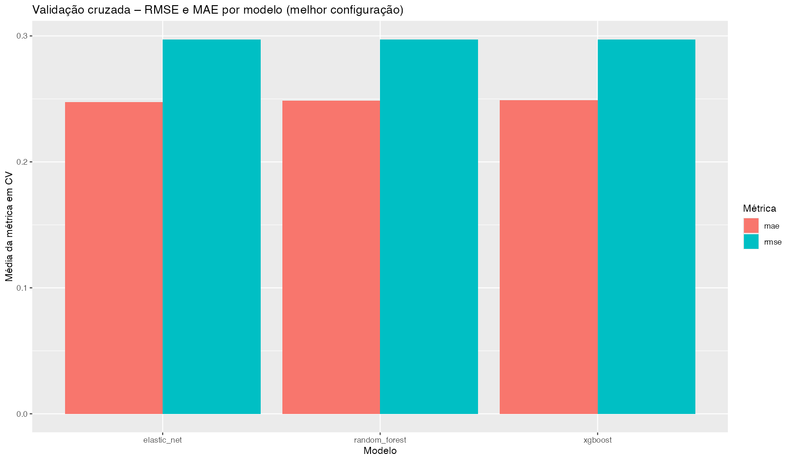
Na validação cruzada, os três modelos apresentam RMSE muito próximos quando avaliados na melhor combinação de hiperparâmetros. As diferenças estão na segunda/terceira casa decimal e são da mesma ordem da incerteza (erro padrão) das métricas por fold.
| .metric | .estimator | .estimate | model | features |
|---|---|---|---|---|
| mae | standard | 0.2371 | xgboost | hybrid |
| mae | standard | 0.2372 | random_forest | hybrid |
| mae | standard | 0.2373 | elastic_net | hybrid |
| rmse | standard | 0.2835 | xgboost | hybrid |
| rmse | standard | 0.2835 | elastic_net | hybrid |
| rmse | standard | 0.2835 | random_forest | hybrid |
Figura 10 – Desempenho em teste por modelo
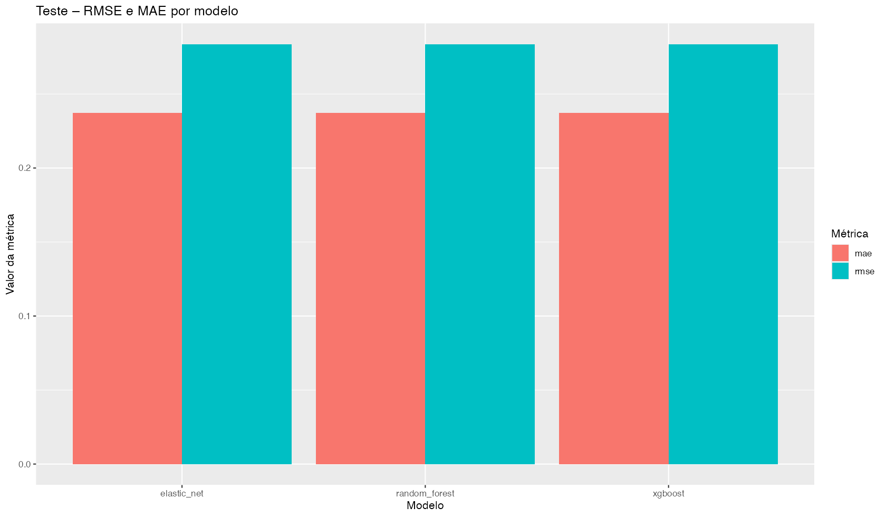
No conjunto de teste, os valores de RMSE/MAE (em log‑salário) por modelo são: xgboost – RMSE ≈ 0.283, MAE ≈ 0.237; random_forest – RMSE ≈ 0.284, MAE ≈ 0.237; elastic_net – RMSE ≈ 0.284, MAE ≈ 0.237. As diferenças absolutas são pequenas, sugerindo que a qualidade das features e o ruído do alvo dominam o desempenho.
No teste, o menor RMSE em log foi do modelo xgboost (RMSE ≈ 0.283). Isso implica um erro multiplicativo típico em torno de 1.33× no salário previsto (erro relativo típico ≈ 33%).
Gráfico – "Matriz de confusão" em faixas de salário (modelo final)
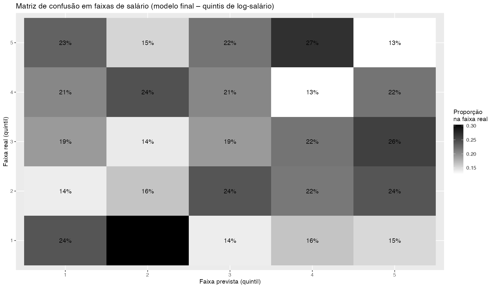
A matriz acima discretiza salários reais e previstos em quintis de salary_log. Concentração na diagonal indica que o modelo tende a colocar a vaga na faixa correta ou adjacente.
Figura 11 – Scree plot da PCA
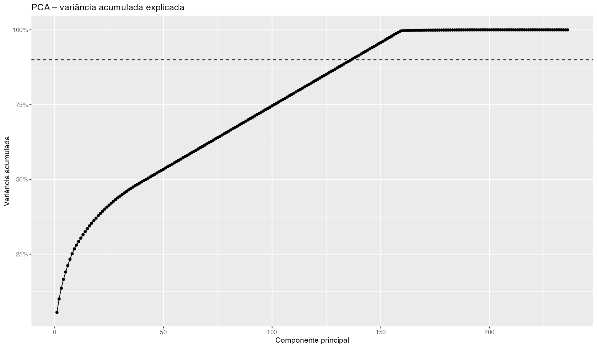
Figura 12 – Silhouette médio por número de clusters
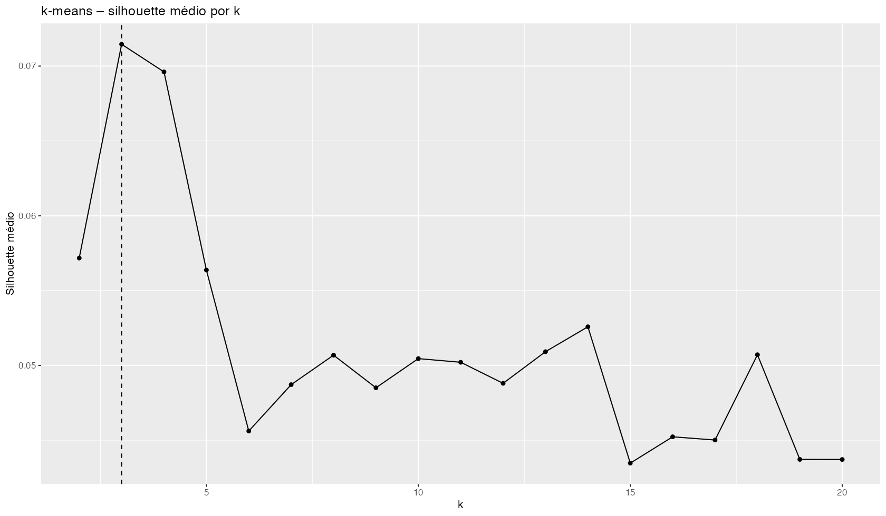
| k | mean_silhouette |
|---|---|
| 2 | 0.057 |
| 3 | 0.071 |
| 4 | 0.070 |
| 5 | 0.056 |
| 6 | 0.046 |
| 7 | 0.049 |
| 8 | 0.051 |
| 9 | 0.049 |
| 10 | 0.050 |
| 11 | 0.050 |
Aplicamos PCA às features híbridas e rodamos k‑means nos scores das primeiras 113 componentes, que explicam aproximadamente 80.1% da variância total. O k foi escolhido pelo maior silhouette médio: k = 3 (silhouette médio ≈ 0.071). A razão betweenss / totss é 10.6%.
| k | totss | betweenss | betweenss_ratio |
|---|---|---|---|
| 3 | 370287.6 | 39409.85 | 0.106 |
Figura 13 – Clusters no espaço PCA
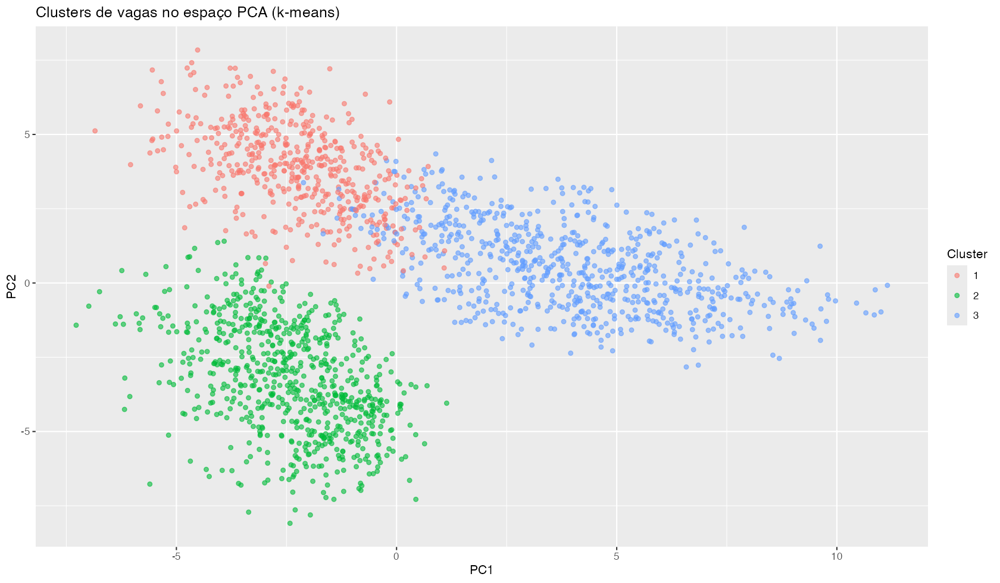
| cluster_kmeans | n | salary_med | salary_p25 | salary_p75 |
|---|---|---|---|---|
| 1 | 505 | 123939 | 94325 | 153934 |
| 2 | 724 | 125868 | 98101 | 151549 |
| 3 | 731 | 120019 | 94002 | 148671 |
Gráfico – Perfil salarial por cluster (k‑means)
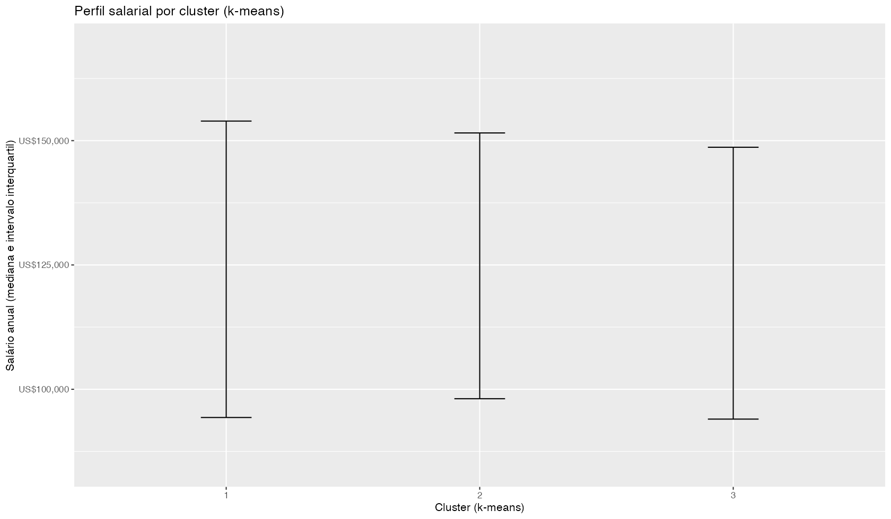
| cluster_kmeans | industry | n |
|---|---|---|
| 1 | Education | 80 |
| 1 | E-commerce | 78 |
| 1 | Automotive | 77 |
| 1 | Retail | 71 |
| 1 | Finance | 68 |
| 2 | Retail | 119 |
| 2 | Automotive | 110 |
| 2 | E-commerce | 109 |
| 2 | Finance | 101 |
| 2 | Education | 96 |
Gráfico – Top indústrias por cluster
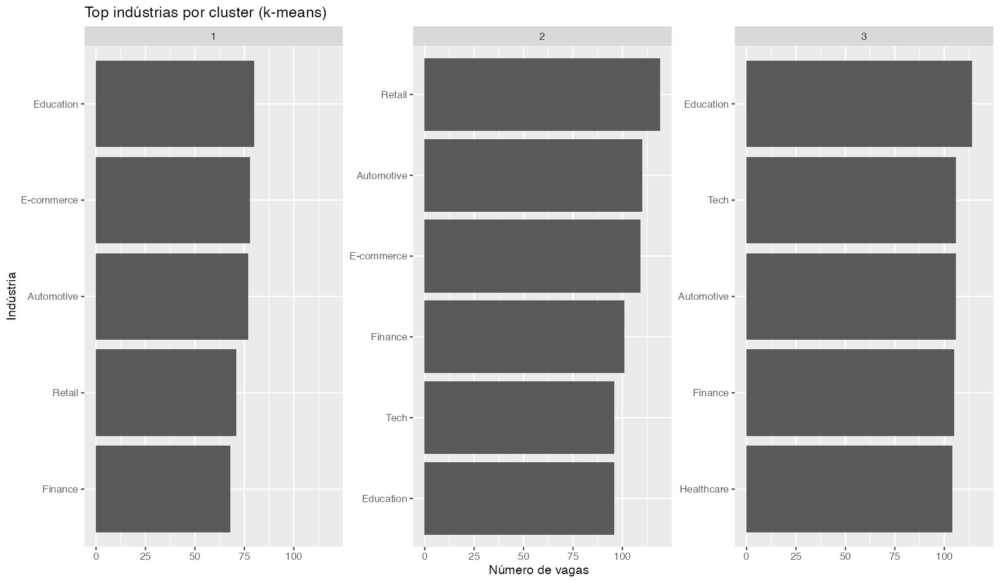
| cluster_kmeans | job_title | n |
|---|---|---|
| 1 | Data Analyst | 269 |
| 1 | Data Scientist | 236 |
| 2 | NLP Engineer | 257 |
| 2 | ML Engineer | 246 |
| 2 | Computer Vision Engineer | 221 |
| 3 | AI Product Manager | 256 |
| 3 | Quant Researcher | 242 |
| 3 | AI Researcher | 233 |
Gráfico – Top títulos por cluster
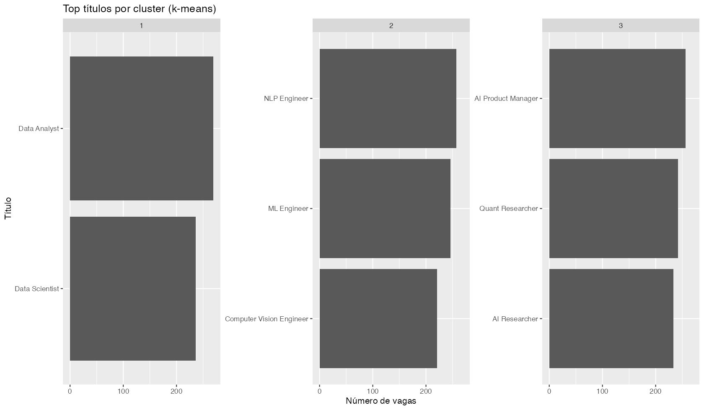
| job_id | cluster_kmeans | cluster_spectral |
|---|---|---|
| 1 | 1 | 2 |
| 2 | 2 | 1 |
| 3 | 3 | 3 |
| 4 | 3 | 3 |
| 5 | 1 | 2 |
| 6 | 3 | 3 |
| 7 | 1 | 2 |
| 8 | 1 | 2 |
| 9 | 2 | 1 |
| 10 | 2 | 1 |
Gráfico – Distribuição de vagas por cluster (k‑means)
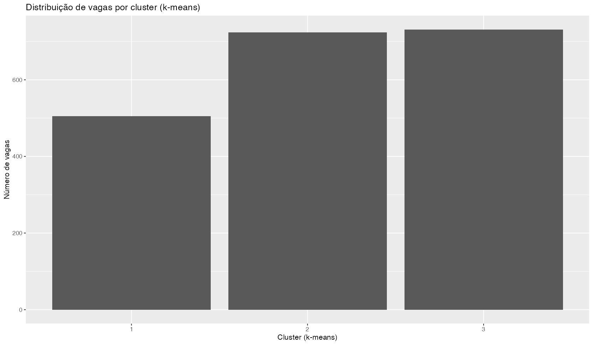
Os clusters exibem perfis salariais distintos: a mediana de salary_mid varia de US$120,019 (cluster 3) a US$125,868 (cluster 2). No cluster de maior mediana, o nível de experiência mais frequente é Entry (35%); no cluster de menor mediana, domina Mid (37%).
Cluster 1: mediana salarial US$123,939 (P25–P75: US$94,325 – US$153,934); indústria mais comum: Education; título mais recorrente: Data Analyst; tópico LDA dominante: T3: keras, aws, c++, tensorflow, numpy (≈ 25%).
Cluster 2: mediana salarial US$125,868 (P25–P75: US$98,101.38 – US$151,549); indústria mais comum: Retail; título mais recorrente: NLP Engineer; tópico LDA dominante: T3: keras, aws, c++, tensorflow, numpy (≈ 24%).
Cluster 3: mediana salarial US$120,019 (P25–P75: US$94,002.25 – US$148,671); indústria mais comum: Education; título mais recorrente: AI Product Manager; tópico LDA dominante: T1: hugging face, r, cuda, langchain, mlflow (≈ 24%).
| cluster_spectral | n | salary_med | salary_p25 | salary_p75 |
|---|---|---|---|---|
| 1 | 724 | 125868 | 98101 | 151549 |
| 2 | 505 | 123939 | 94325 | 153934 |
| 3 | 731 | 120019 | 94002 | 148671 |
Gráfico – Perfil salarial por cluster (clustering espectral)
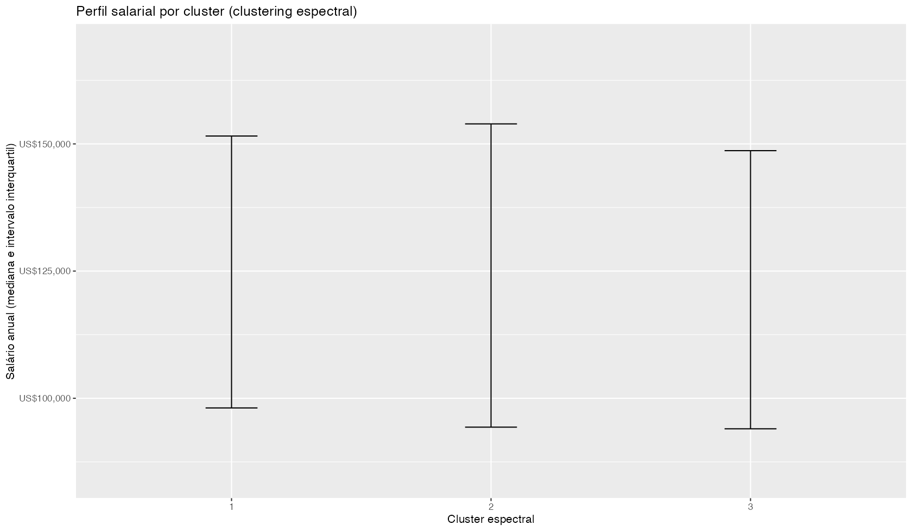
O clustering espectral nos embeddings apresentou silhouette médio ≈ 0.165, sugerindo que estruturas não esféricas podem ser capturadas de forma um pouco mais nítida do que pelo k‑means em PCA. Ainda assim, os valores seguem baixos, indicando fronteiras difusas.
| k | loglik |
|---|---|
| 5 | -27845 |
| 10 | -27899 |
| 20 | -27971 |
Gráfico – Escolha de k em LDA por log-verossimilhança
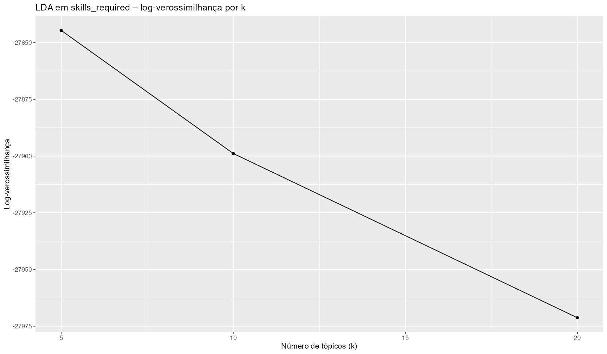
Entre os k testados, o melhor valor foi k = 5 (loglik ≈ -27845).
Figura 14 – Tópicos de skills (LDA)
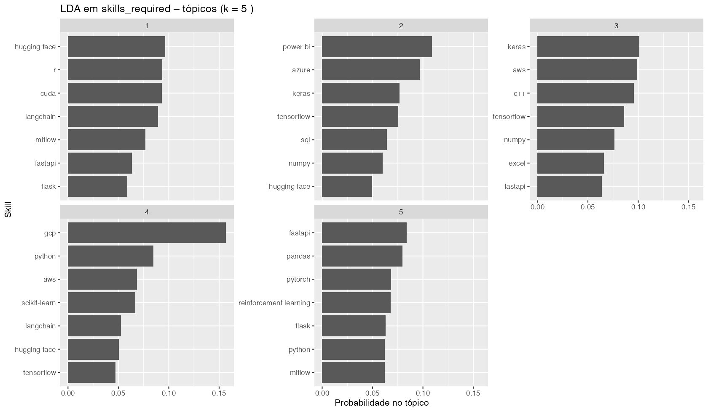
| topic | term | beta |
|---|---|---|
| 1 | hugging face | 0.096 |
| 1 | r | 0.093 |
| 1 | cuda | 0.093 |
| 1 | langchain | 0.090 |
| 1 | mlflow | 0.077 |
| 1 | fastapi | 0.063 |
| 1 | flask | 0.059 |
| 2 | power bi | 0.109 |
| 2 | azure | 0.097 |
| 2 | keras | 0.077 |
| dominant_topic | n_jobs | label | topic_label |
|---|---|---|---|
| 1 | 475 | hugging face, r, cuda, langchain, mlflow | T1: hugging face, r, cuda, langchain, mlflow |
| 2 | 362 | power bi, azure, keras, tensorflow, sql | T2: power bi, azure, keras, tensorflow, sql |
| 3 | 469 | keras, aws, c++, tensorflow, numpy | T3: keras, aws, c++, tensorflow, numpy |
| 4 | 425 | gcp, python, aws, scikit-learn, langchain | T4: gcp, python, aws, scikit-learn, langchain |
| 5 | 269 | fastapi, pandas, pytorch, reinforcement learning, flask | T5: fastapi, pandas, pytorch, reinforcement learning, flask |
Gráfico – Tamanho dos tópicos (número de vagas)
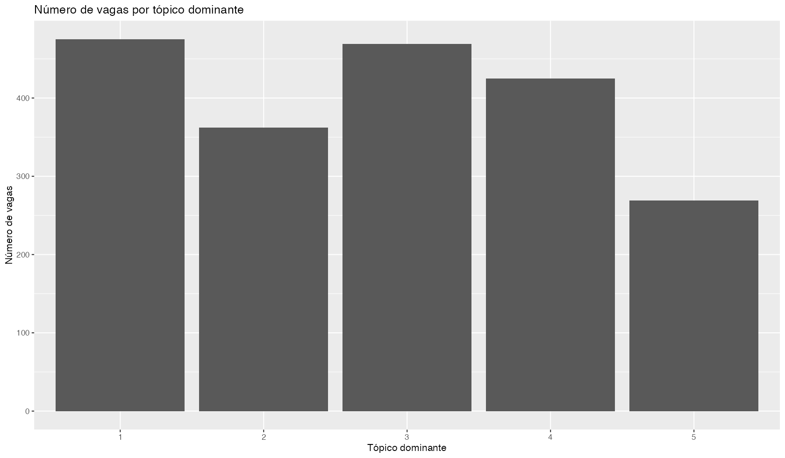
| job_id | dominant_topic |
|---|---|
| 1 | 4 |
| 2 | 1 |
| 3 | 5 |
| 4 | 1 |
| 5 | 2 |
| 6 | 4 |
| 7 | 4 |
| 8 | 5 |
| 9 | 4 |
| 10 | 3 |
O LDA foi ajustado sobre skills_required. Cada tópico corresponde a um stack recorrente; por exemplo: Tópico 1: hugging face, r, cuda, langchain, mlflow ; Tópico 2: power bi, azure, keras, tensorflow, sql ; Tópico 3: keras, aws, c++, tensorflow, numpy ; Tópico 4: gcp, python, aws, scikit-learn, langchain ; Tópico 5: fastapi, pandas, pytorch, reinforcement learning, flask.
Figura 15 – Mapa de proximidade entre skills
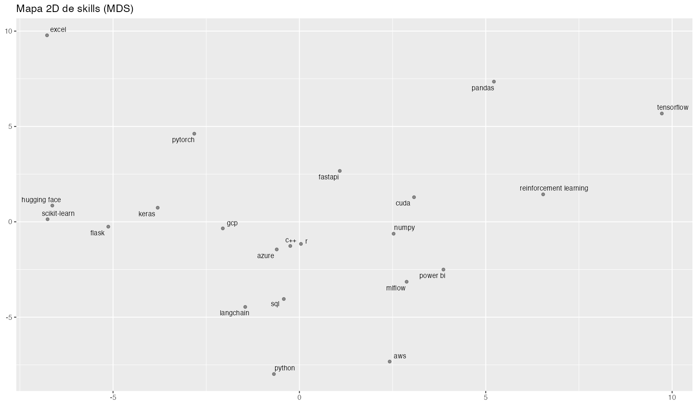
O MDS em cima da matriz de coocorrência gera um mapa em que habilidades próximas tendem a aparecer juntas em vagas semelhantes. Agrupamentos visuais indicam stacks que coocorrem com frequência (BI, ML clássico, DL, MLOps etc.).
| method | n_clusters | mean_silhouette |
|---|---|---|
| pca_kmeans | 3 | 0.071 |
| spectral_clustering | 3 | 0.165 |
| lda_topics | 5 | NA |
Gráfico – Comparação entre métodos não supervisionados
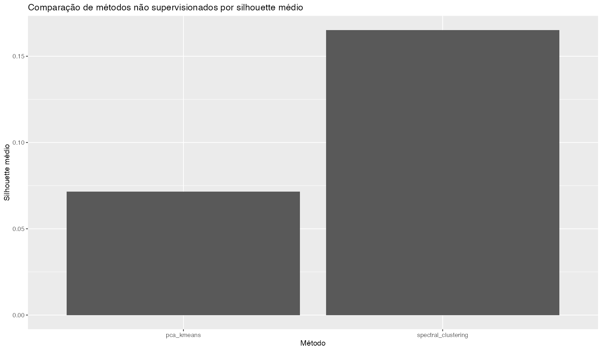
Os valores de silhouette médio são modestos, indicando estrutura apenas moderadamente definida: há tendência a formação de grupos, mas com fronteiras difusas. Na prática, os clusters organizam o espaço de vagas em segmentos interpretáveis, não classes rígidas.
Gráfico – Heatmap k-means × clustering espectral
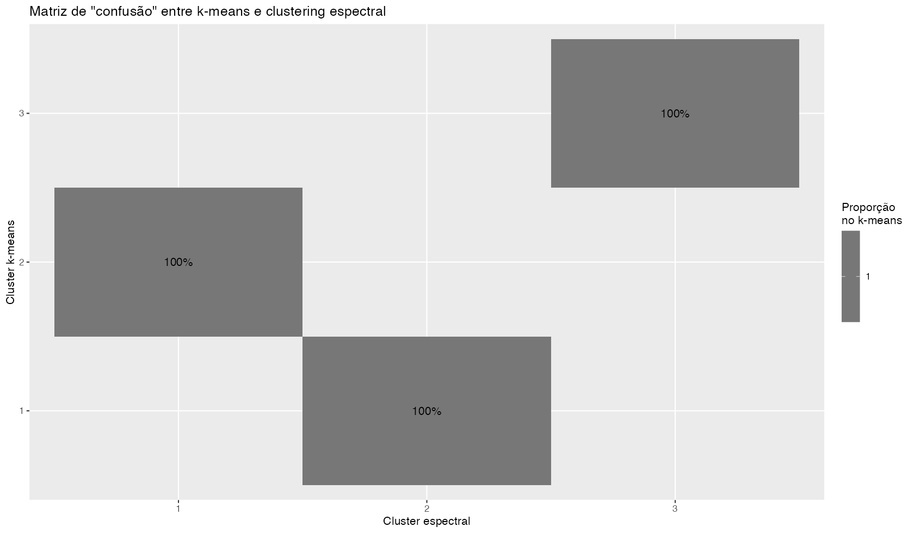
As proporções são normalizadas por linha (dentro de cada cluster do k‑means). Concentração em poucas células sugere alta consistência.
Gráfico – Heatmap cluster × tópico LDA
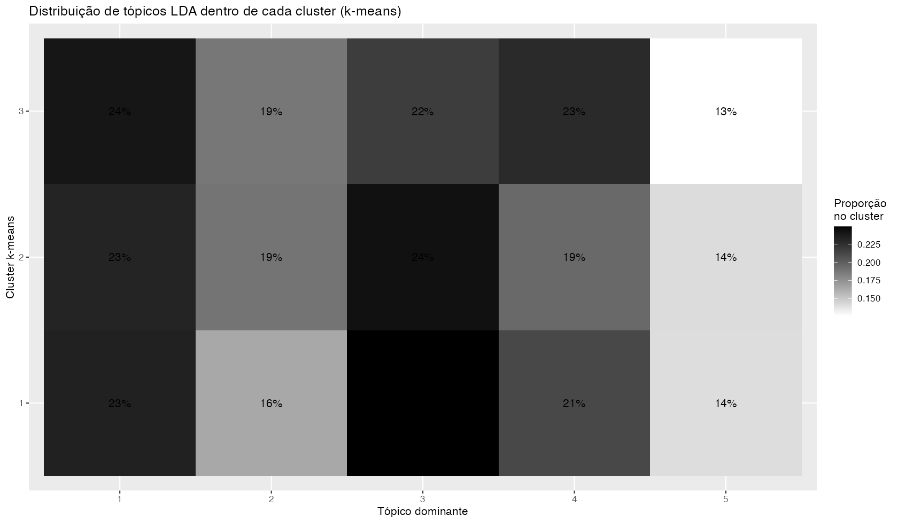
O heatmap cluster × tópico LDA mostra quais stacks de skills são mais frequentes em cada cluster salarial.
Implementamos um sistema de recomendação content‑based para recomendar vagas semelhantes a um perfil de usuário ou a uma vaga específica.
Fluxo: representar vagas por TF‑IDF normalizado; gerar vetor do usuário; calcular similaridade cosseno; aplicar filtros de negócio; e, opcionalmente, usar MMR para balancear relevância e diversidade.
| rank | job_id | company_name | job_title | industry | experience_level | employment_type | location | salary_range_usd | score |
|---|---|---|---|---|---|---|---|---|---|
| 1 | 1662 | Anderson, Tucker and Phillips | Data Scientist | Healthcare | Mid | Remote | Jenniferborough, CO | 76395-94209 | 0.334 |
| 2 | 1720 | Grimes-Cruz | Data Analyst | Healthcare | Entry | Contract | West Nicolefurt, US | 145486-222351 | 0.320 |
| 3 | 345 | Anthony, Miller and Russell | Data Analyst | E-commerce | Senior | Internship | East Linda, NZ | 120234-139093 | 0.308 |
| 4 | 780 | Harris and Sons | Data Analyst | E-commerce | Entry | Internship | Amandabury, GW | 142504-235377 | 0.304 |
| 5 | 1198 | Woods-French | AI Researcher | Healthcare | Mid | Internship | South Meagan, GQ | 81361-133784 | 0.296 |
| 6 | 984 | Garcia-Smith | Data Scientist | Automotive | Entry | Contract | North Kevin, YE | 47150-124312 | 0.275 |
| 7 | 998 | Anderson LLC | ML Engineer | Tech | Senior | Full-time | Elizabethton, PW | 141251-152764 | 0.259 |
| 8 | 426 | Edwards, Jackson and Baker | Data Analyst | Automotive | Entry | Contract | Sullivanshire, WS | 147219-223596 | 0.249 |
| 9 | 1038 | Ramirez, Sanchez and Lucas | NLP Engineer | Retail | Senior | Internship | Johnsonfurt, GQ | 147851-188241 | 0.244 |
| 10 | 1458 | Bush Inc | AI Researcher | Education | Entry | Full-time | New Christophermouth, MC | 89994-162981 | 0.227 |
Gráfico – Score das recomendações similares
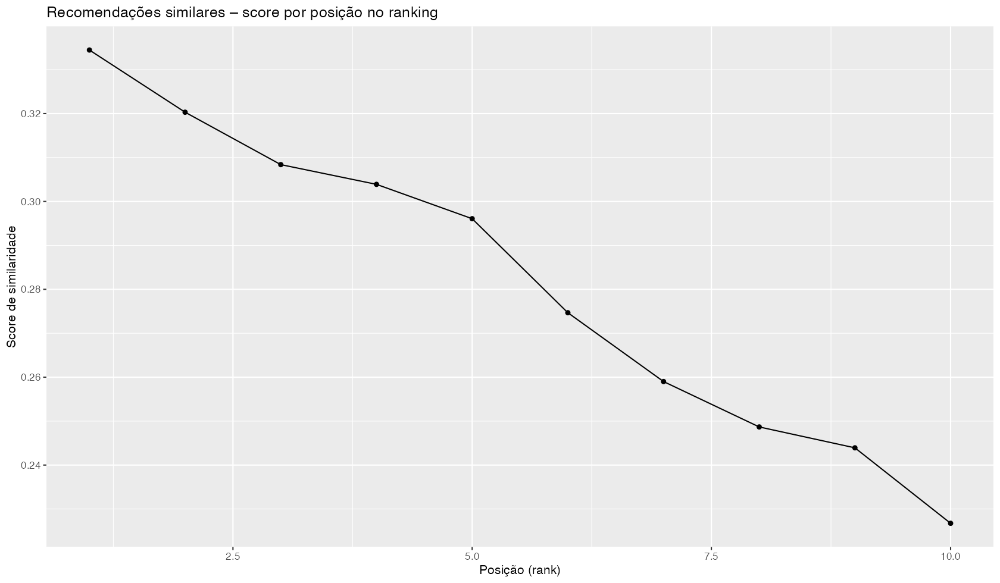
O score é a similaridade cosseno entre descrições. No exemplo, a primeira recomendação tem score ≈ 0.334 e a última do top‑10 tem score ≈ 0.227.
| rank | job_id | company_name | job_title | industry | experience_level | employment_type | location | salary_range_usd | score |
|---|---|---|---|---|---|---|---|---|---|
| 1 | 1884 | Wolfe, Stephenson and Sanchez | NLP Engineer | Tech | Mid | Full-time | Wallacetown, MG | 68291-154121 | 0.213 |
| 2 | 1251 | Garcia, Smith and James | ML Engineer | Automotive | Mid | Full-time | Lake Gregoryshire, CD | 111473-178933 | 0.195 |
| 3 | 50 | Richards PLC | NLP Engineer | Finance | Mid | Full-time | Lewismouth, TD | 75575-120477 | 0.181 |
| 4 | 1154 | Smith-Hansen | Quant Researcher | Retail | Mid | Full-time | North Michellestad, ME | 126850-203760 | 0.171 |
| 5 | 1055 | Black-Simmons | Data Scientist | Automotive | Senior | Full-time | Allenburgh, BW | 136391-226513 | 0.169 |
| 6 | 761 | Mcdowell-Thompson | Computer Vision Engineer | E-commerce | Mid | Full-time | Nathanville, GH | 100842-113216 | 0.169 |
| 7 | 964 | Flynn-Franco | AI Product Manager | Tech | Senior | Full-time | North Grant, MR | 110260-191166 | 0.164 |
| 8 | 430 | Wilcox Ltd | Computer Vision Engineer | Automotive | Mid | Full-time | Robertsonbury, VN | 100296-111823 | 0.147 |
| 9 | 1171 | Nguyen, Brown and Edwards | Data Scientist | Finance | Mid | Full-time | Port Victoriaburgh, PG | 84079-116621 | 0.144 |
| 10 | 1269 | Gonzalez-Gordon | Data Scientist | Education | Senior | Full-time | Jodyville, BA | 98960-171179 | 0.134 |
Gráfico – Score das recomendações para o perfil
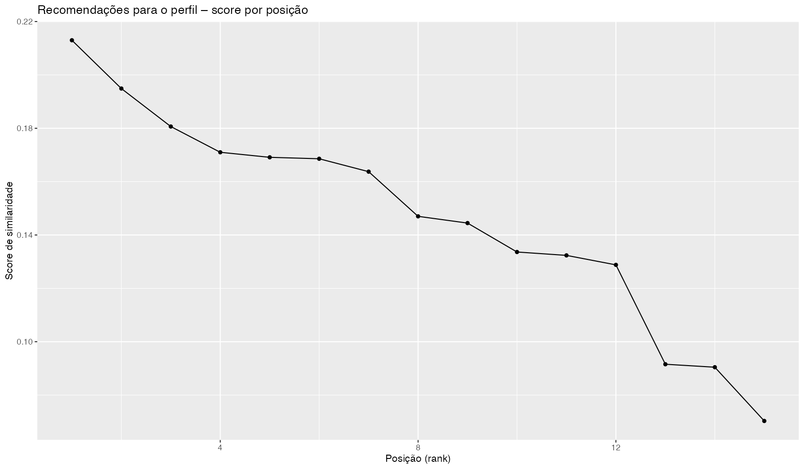
Para o perfil configurado, o score da primeira vaga recomendada é ≈ 0.213 e o da última do top‑15 é ≈ 0.070.
Para reduzir risco de consumo excessivo de memória, aplicamos uma prefiltragem (pool_top) antes do MMR: o MMR roda apenas sobre os candidatos mais relevantes (ex.: top 300–1000 conforme top_k).
No teste, os modelos apresentaram RMSE/MAE (em log‑salário): xgboost: RMSE ≈ 0.283, MAE ≈ 0.237; random_forest: RMSE ≈ 0.284, MAE ≈ 0.237; elastic_net: RMSE ≈ 0.284, MAE ≈ 0.237. O modelo final (menor RMSE) foi xgboost. O RMSE corresponde a erro multiplicativo típico ≈ 1.33× (erro relativo ≈ 33%), comparável à dispersão observada de salary_log (DP ≈ 0.295).
A análise de clusters revela segmentos com perfis salariais relativamente distintos: a mediana de salary_mid varia de US$120,019 (cluster 3) a US$125,868 (cluster 2). Ainda assim, há ampla variação dentro de cada cluster, sugerindo um mercado mais contínuo que discretizado.
O LDA identificou stacks de skills recorrentes, como Tópico 1: hugging face, r, cuda, langchain, mlflow ; Tópico 2: power bi, azure, keras, tensorflow, sql ; Tópico 3: keras, aws, c++, tensorflow, numpy, úteis para sumarizar perfis técnicos e conectar tópicos às faixas salariais.